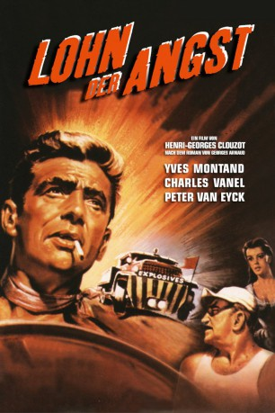
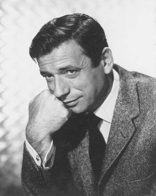
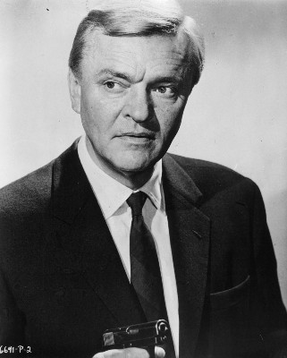

#1680 Lohn der Angst
Alternativ: The Wages of Fear (Englischer Titel)
Auszeichnungen: 1 BAFTA-Awards gewonnen
 
 IMDB-Wertung: 8.1 / 10
IMDB-Wertung: 8.1 / 10  IMDB-TOP-Platzierung: 207
IMDB-TOP-Platzierung: 207  Metascore: 0
Metascore: 0 
Vier gescheiterte Existenzen in einem verlassenen Örtchen in Venezuela: Bimba (Peter van Eyck), ein aus dem Arbeitslager der Nazis entkommener Deutscher, der Korse Mario (Yves Montand), Smerloff (Jo Dest) aus Russland und Luigi (Folco Lulli), ein Italiener. Über eine halbe Stunde nur Trostlosigkeit, Leere und Beklommenheit. In Las Piedras bleiben diejenigen hängen, die anderswo nicht mehr erwünscht sind. Ihre einzige Freude ist die Bar von Hernandez (Dario Grandinetti), in der die hübsche Kellnerin Linda (Véra Clouzot) arbeitet. Eines Tages kommt M. Jo (Charles Vanel) ins Dorf und freundet sich mit Mario an. Sie verbindet ihre kriminelle Vergangenheit, durch die sie nicht mehr nach Europa zurückkehren können. Doch eine nahe gelegene Ölquelle ändert ihr Schicksal vollkommen.
Jahr: 1953
Dauer: 150 Minuten
FSK: 16
Land: Frankreich Studio: PolybandTonspuren: DD1.0 - ,
Untertitel: Englisch,
Auflösung: 720p (952x720) Größe: 6963 MB
Genre: Abenteuer, Drama, Thriller
Regisseur: Henri-Georges Clouzot
Drehbuch: Georges Arnaud, Henri-Georges Clouzot, Jérôme Géronimi
Soundtrack: Georges Auric
Darsteller:
-  Yves Montand als Mario
- Charles Vanel als M. Jo
-  Peter van Eyck als Bimba
- Véra Clouzot als Linda
- Folco Lulli als Luigi
- William Tubbs als Bill O'Brien
- Darío Moreno als Hernandez
- Jo Dest als Smerloff
- Antonio Centa als Camp Chief
- Luis De Lima als Bernardo
- Grégoire Gromoff als
- Joseph Palau-Fabre als
- Faustini als
- Seguna als
- Darling Légitimus als
- Pat Hurst als (uncredited
- Evelio Larenagas als (uncredited
- Jeronimo Mitchell als Dick , uncredited
- Ricardo als (uncredited
- François Valorbe als (uncredited
- Rico Zermano als (uncredited
Datei: X:\1950-1959\Lohn der Angst (1953, FSK16, 952x720).mkv seit 05.08.2015
Festplatte: HD 1900-1970
 Es gibt insgesamt 141 Filme in der Gruppe '1950-1959'
Es gibt insgesamt 141 Filme in der Gruppe '1950-1959'